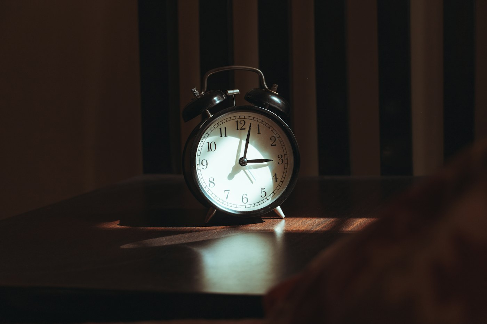
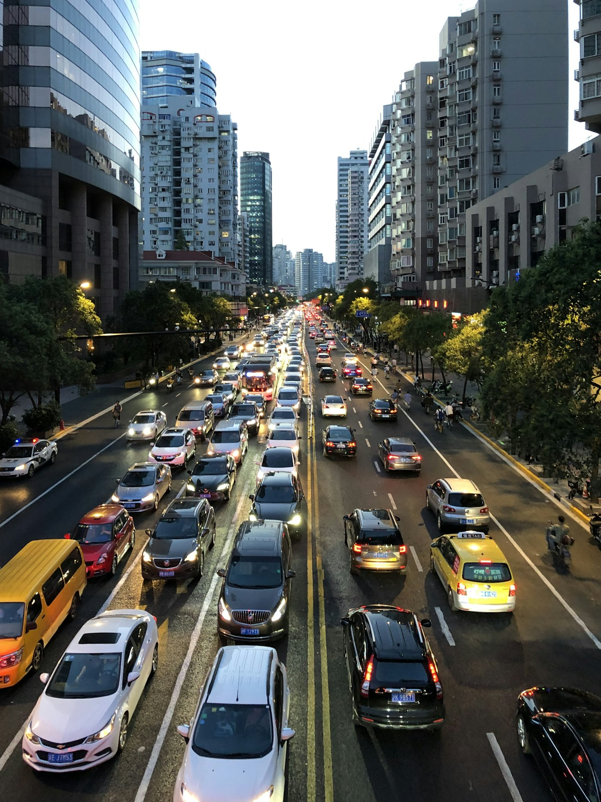
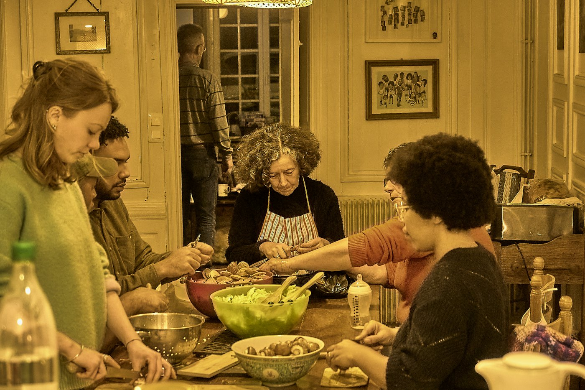
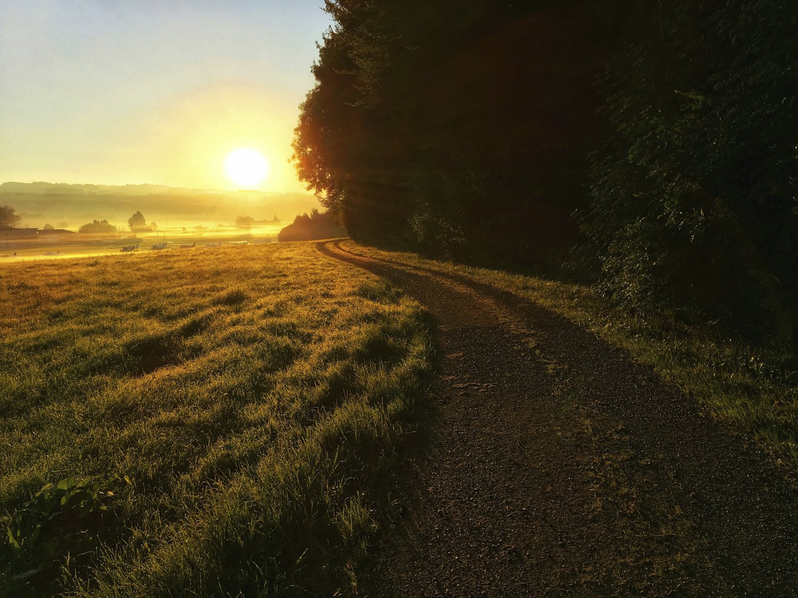
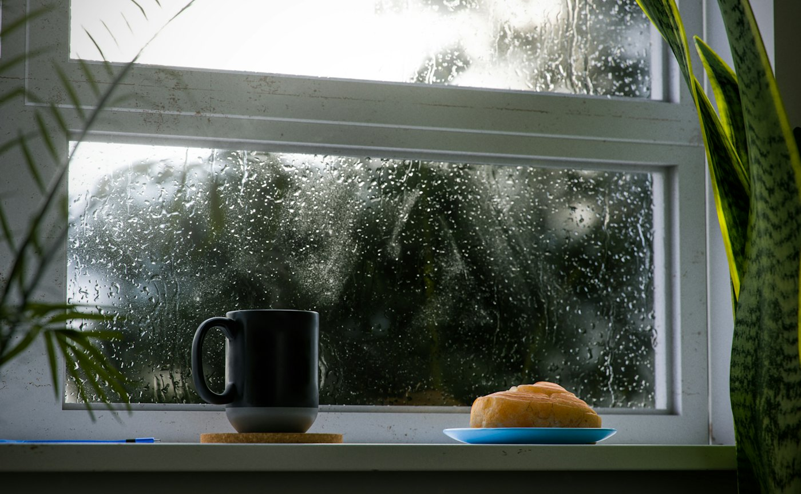

A four-week social rollout for a sermon series on Sabbath rest. The goal was to reach people in their 20s and 30s who feel worn out, and give them one honest reason to show up on Sunday.
Concept projectMost church promo shouts. This one slows down. Every piece uses a classic, sacred look: warm linen paper, an arched window with a sun rising through engraved lines in rust and navy, wide-spaced serif capitals and a thin gold outline. Lots of empty space and short lines of text make the feed itself feel like a deep breath. The voice is plain and a little honest about how tired everyone is.
Young adults and young parents who are busy, burned out, and skeptical of anything that feels like a sales pitch.
"You weren't made to run on empty." Rest is a gift from God, not a reward you earn.
More saves and shares than likes, first-time guest cards that mention Instagram, and replies that start real conversations.
Five slides built to be saved and sent to a friend. The first slide makes people stop, the middle slides give them something useful, and the last one invites them in. Swipe to see all five.
A 20-second reel shot on a phone by a volunteer. No voiceover, just natural sound and on-screen text. It shows an ordinary rushed morning that slowly comes to a stop.

0:005:58 am.
0:03Coffee. Emails. Traffic.
0:07Kids. Dinner. Repeat.
0:11What if you just… stopped?
0:15You weren't made to run on empty.Edited in Premiere with captions burned in. A 9:16 version goes to Reels and Shorts, and a 4:5 crop goes to the Facebook feed.
The full rollout, two weeks before the series and through all four Sundays. It lives in Monday.com so the comms team and ministry leaders can see what's coming, and it's scheduled in Metricool.
Replying is part of the campaign. Each reply should sound like a real person at the church: warm, short, and never a canned script. Prayer requests and anything sensitive go to a pastor the same day.
Targets we'd set with the comms team before launch, then check in the monthly review. These are goals for the concept, not real results.
Target: saves and shares outpace likes on every carousel.
Target: at least half of reel views come from non-followers.
Target: guest cards that list Instagram as how they heard.